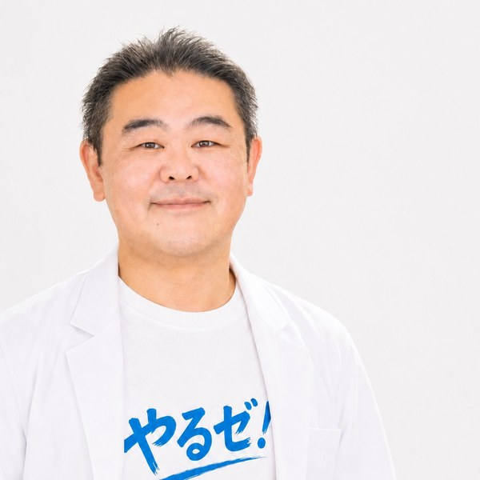

日程調整、アセスメント、サービス担当者会議、
NDA・同意書、モニタリング、退院通知、
記録生成支援まで。
病院と施設のやりとり、もう疲れない。

ごとう もとはる
医療法人社団コンパス 理事長
コンパスメディカルグループ 代表理事
退院前カンファレンス、共同指導、情報共有を ICT で完結。会えなくても、書類が崩れることはありません。
訪問診療・訪問看護・訪問鍼灸マッサージ。それぞれの専門職が在宅で連携できる仕組みを支えます。
退院調整の現場で起きている7つの課題を、ｍやるゼ！でまとめてサポートします。
紙・電話・手書き・移動・押印で疲れていた現場が、
ｍやるゼ！導入後は「タブレット1枚」に集約されます。
病院・施設・家族の空き時間を一画面で共有し、面談・会議・モニタリングを投票形式で確定。リスケもチャットで完結します。
退院カンファレンス記録・サービス担当者会議記録を、テンプレに沿って入力すれば PDF を即時出力。書き直し・押印・スキャンの手間を大幅に減らせます。
病院に集まる必要なし。施設・訪看・薬局・鍼灸院がそれぞれの場所から共同指導を実施。算定要件にも完全準拠。
タブレットでサインし、その場で SHA-256 ハッシュチェーンへ登録。原本紛失・未回収・改ざんのリスクがゼロになります。
「誰が・いつ・何を」操作したか、QR コード1枚で第三者検証可能。医療保険算定の返戻対策・指導対応時の証跡として活用できます。
病院・在宅医・施設・訪看・薬局・鍼灸院。多職種が同じ画面を見ながら患者・利用者をひとつのチームで支えます。
受入れ・移行・在宅連携に必要なすべてを、1つのアプリに一体化。
電話の往復を最小化、候補日時を投票で確定
「調整地獄」を軽減
入居・在宅受入の事前評価をオンライン完結
受入ミス・聞き漏れを抑止
退院前指導をオンラインで実施・記録
移動を抑えて算定対応
利用開始後の会議・状態確認もオンラインで
電話・FAX依存からの脱却
紙・ハンコ・手書きを減らす
監査書類のテンプレ化
指導・監査時に証跡をすぐ提示
監査・返戻・事故対策
「現場が違えば、抱える痛みも違う」
各職種の業務に最適化した画面・帳票・通知を、ひとつのアプリの中で切り替えます。
退院前の調整・電話・書類で月40時間以上を消費。
日程調整・カンファ記録・退院通知が1画面で完結。
受入アセスメントが紙・聞き取り中心。情報漏れがクレーム源。
オンラインアセスメントと NDA 締結を、入居前にすべて完了。
退院時共同指導加算 600単位、移動と書類で算定漏れ多発。
オンライン同席で算定対応・記録のテンプレ化・月次モニタリング機能を完備。
同意書交付・施術報告書の有効期限管理が煩雑、療養費返戻が怖い。
同意書 / 報告書は専用ポータルで即受領・自動 PDF 発行。
病院からの情報伝達がFAX・口頭中心、服薬指導内容が散逸。
医師指示・服薬指導・モニタリング履歴が改ざん不可ログで保全。
サービス担当者会議の開催調整・記録・更新でケアプランが遅延。
サ担会議・モニタリング・状態変化共有をシステム上で集約。ケアプラン作成・更新の参照資料に活用できます。
退院通知 × NDA × 同意書 × 訪問鍼灸マッサージ。
すべての帳票に 電子署名 + タイムスタンプ を付与、SHA-256 ハッシュチェーンで改ざん不可、医療保険算定にも対応。
入院中の患者の退院後の在宅療養を支える医療職連携を、ICT で完結。退院前カンファレンスの記録が、そのまま改ざん不可の証跡になります。
病院・施設・訪問看護・薬局・鍼灸院。法人間で締結する秘密保持契約をオンラインで完結。締結と同時に改ざん検知ハッシュチェーンへ登録されます。
すべての同意書・指示書に 電子署名 + タイムスタンプ + SHA-256 ハッシュチェーン の三位一体保証。総務省認定タイムスタンプ業務（令和3年法律第146号）準拠で、「誰が」「いつ」「何を」を法的に争いようのない証拠として確定します。e-文書法・電子署名法に準拠。
医師の同意書交付から、鍼灸師の施術報告書投稿、療養費請求まで。在宅医療の現場と施術所をシームレスにつなぎます。
ｍやるゼ！の同意書・指示書・退院通知・NDA は、発行された瞬間に 「誰が・いつ・何を」 が暗号学的に確定します。
紙の判子・確定日付・台帳がそれぞれ持っていた役割を、電子の三位一体で担保します。
WHO ─ 誰が
本人にしか作れない秘密鍵で文書ハッシュに署名。後藤先生の実印に相当する本人証明と、改ざんすれば即検知される検証可能性を同時に実現。
WHEN ─ いつ
総務省認定 TSA（時刻認証局）が、原子時計レベルの正確な時刻と文書ハッシュをまとめて封印。公証役場の確定日付に相当。後付け改ざんが論理的に不可能。
ORDER ─ 時系列で
発行済み文書を SHA-256 で時系列に連鎖。1 件でもこっそり差し替えるとチェーン全体が崩れる。台帳の連番管理を暗号学的に担保。
病棟・在宅・施術所・面談室。
それぞれの場面に最適化された画面が、タブレット 1 枚で完結します。
病棟ナースステーションで使う「入院患者一覧」画面。バイタル異常・処置中・退院候補をワンタップで切替表示。退院調整看護師への引継ぎも、その場でアプリ通知。
医師・看護師・ケアマネ・薬剤師・理学療法士。参加者・発言・決定事項をテンプレに沿って入力すれば、PDF を即時出力。退院時共同指導料 B004（1500 点）の算定根拠書類として活用できます。
治療同意書・在宅サービス利用同意書・NDA。患者・ご家族の前で説明しながら、その場で電子署名。SHA-256 ハッシュチェーンへ即時登録され、QR コードで第三者検証が可能になります。
医師の同意書を鍼灸師ポータルで即時受領。施術後の報告書もタブレットから投稿、療養費同意書交付料 B013（100点）の算定根拠と療養費請求の添付書類が同時に完成します。
ご自宅のリビングで、訪問看護・訪問薬剤・訪問鍼灸を受ける利用者。多職種が「いつ・誰が・どのケアをしたか」を、ご家族もタブレットで一画面確認できる仕組みです。
通話・記録・同意・ログ、すべて込み。
解約は月末締め・当月末終了。
※ 表示価格は税別です。解約は月末締め・当月末終了。解約後30日間はデータ閲覧・エクスポートが可能です。
※ 正確な監査ログのため、スタッフごとに個別IDの発行を推奨します。ID共用はログの精度低下につながります。
ご自身でのセットアップも十分に可能ですが、初期導入を当社でお手伝いするプランもご用意しています。
※ 患者・利用者の個人情報は代行範囲に含まれません（要配慮個人情報のため、貴機関でご入力ください）。
以下はｍやるゼ！の実際の利用画面です。
患者ごとのケース管理、通話URL、同意書、参加者、監査ログまでタブで即アクセス。電話・FAX・移動をゼロに。
家族説明・署名・原本管理まで完全デジタル化。タイムスタンプ付きで紙同意と同等の法的効力。
URL発行からビデオ通話・参加記録まで一体化。通話終了後はテンプレに沿って入力すれば議事録 PDF を即時出力できます。
退院時共同指導記録を公式帳票形式のテンプレで作成。手書き・スキャン・押印作業の負担を大幅に減らせます。
操作・通話・同意取得の履歴をタイムライン形式で保存。実地指導・監査の際に PDF 出力または画面提示で対応できます。
複数の候補日時を提示すると、受信側が○△×で投票。回答期限到達時または全員回答時に、最多希望の日時に自動で確定し面談URLも自動生成します。電話・メール往復を大幅削減。
病院・訪問看護・施設・ケアマネ どの立場からでも導入できます
医師・看護師・介護スタッフ・エンジニア・経営メンバー。
立場を超えた11人のチームが、医療と介護の現場のために動いています。